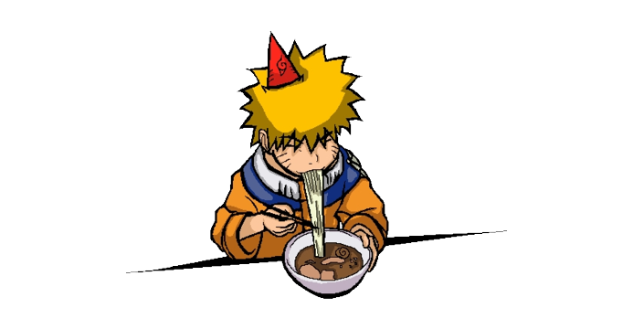
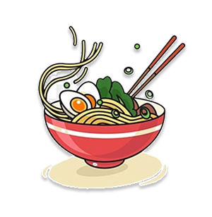
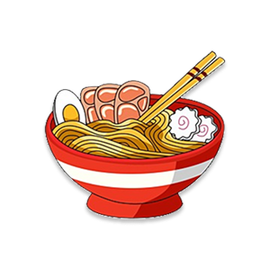
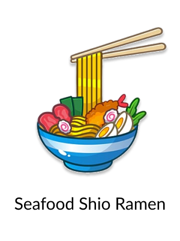

Uzumaki Naruto’s favorite
Hokages changed, wars said hello at the door of konoha village, people left and came again, but the taste of our Ramen never changed. Offered with love from the most talented chef.
Order Now
Here are some Shinobi Approved dishes

Tokyo Shoyu Ramen

Curry Laksan Ramen

Seafood Shio Ramen
Ah, Ichiraku Ramen, a true delight for any ninja's taste buds. It's a place of nostalgia and comfort, where delicious flavors blend with memories of comrades and missions. The aroma of the broth, the tender noodles, and the perfectly seasoned toppings—they all come together in a bowl of culinary bliss.
It's not just about the delectable flavors and comforting warmth of the ramen itself; it represents a sense of community and fond memories. As a teacher, I often find myself enjoying a bowl of Ichiraku Ramen with my students. It's a place where we can relax, share stories, and strengthen the bonds between us.